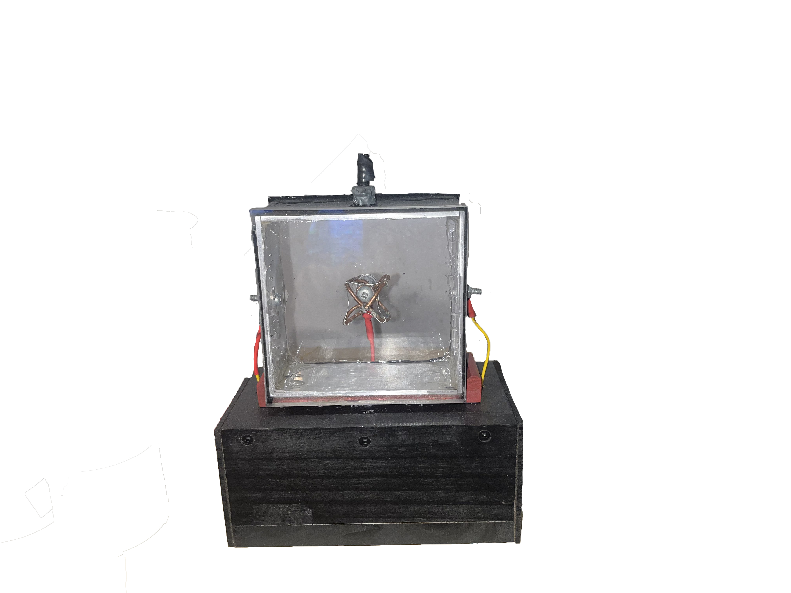
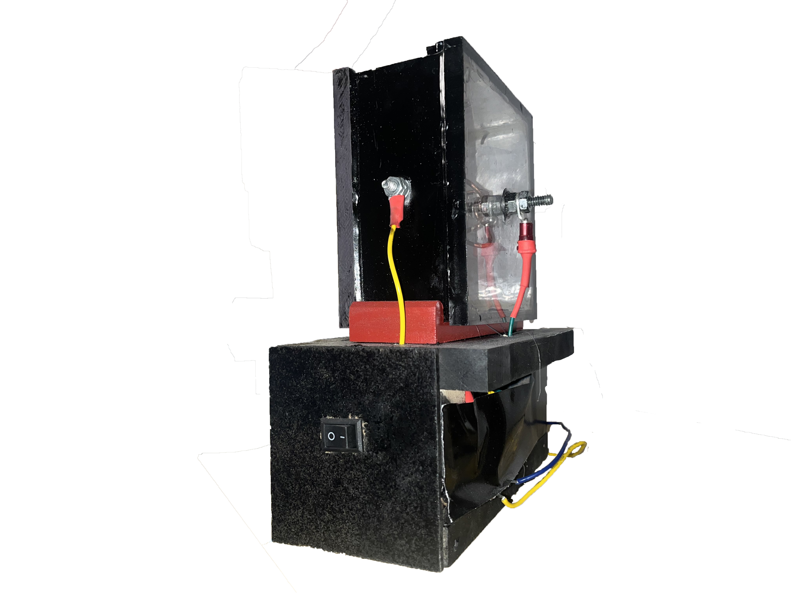
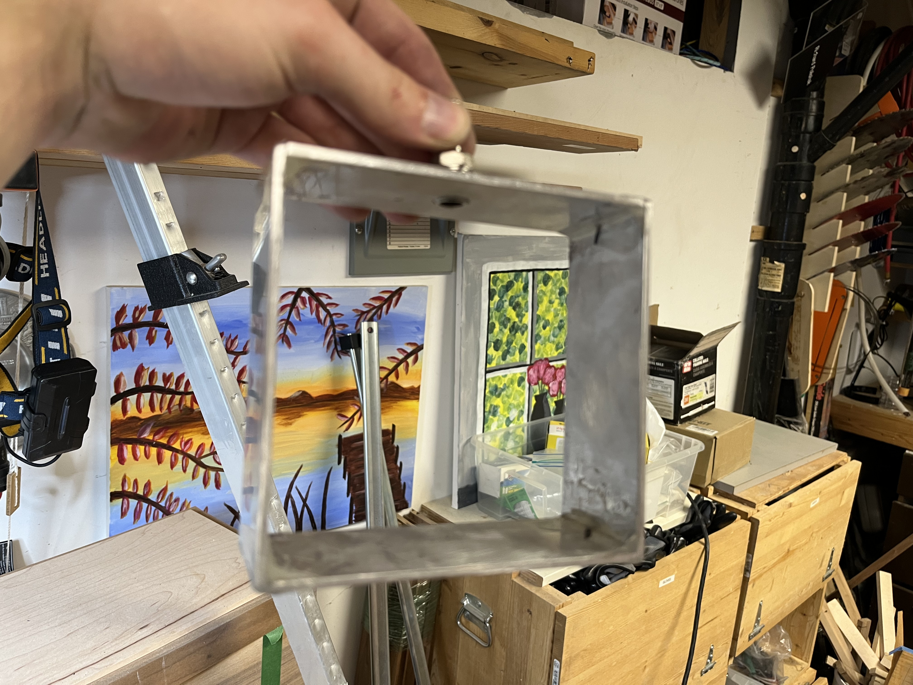
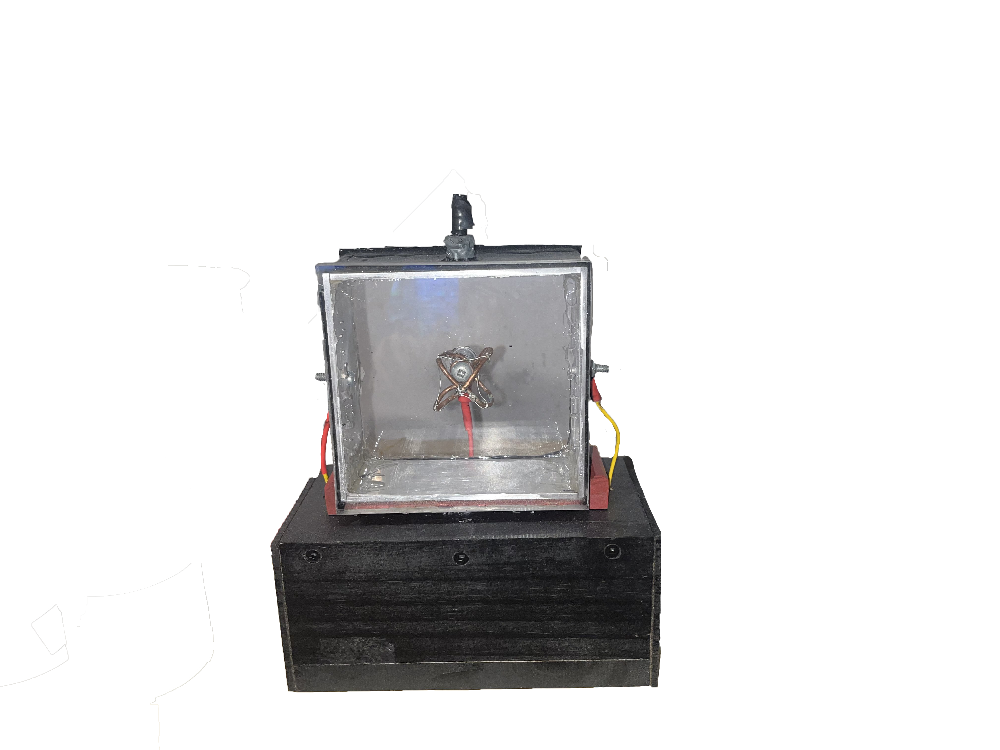
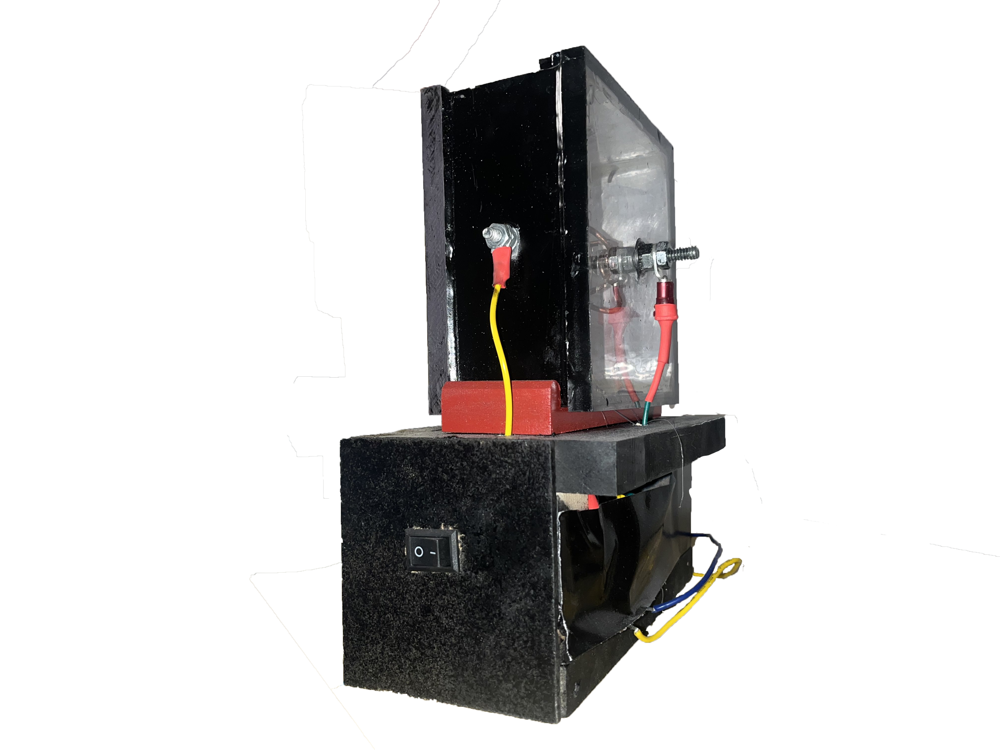
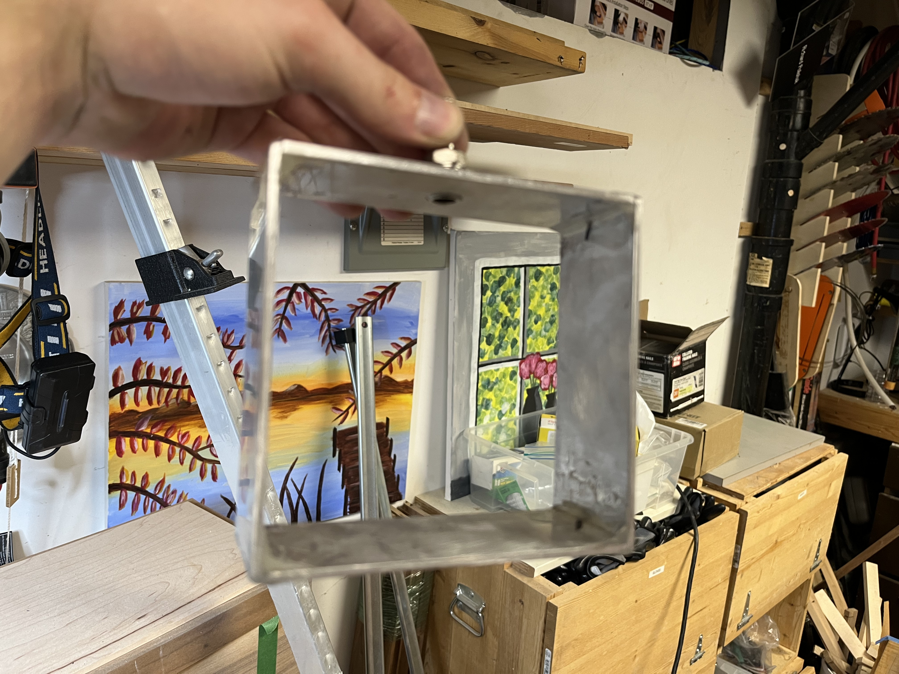

Overview
As a personal engineering project I decided to construct a functional demo fusion reactor using a custom-built high-voltage transformer and rectifier circuit to generate and sustain a stable plasma field. I engineered and built a vacuum chamber system which could sustain -15 psi to create the optimal environment for Inertial Electrostatic Confinement (IEC), enabling controlled fusion conditions. I also isolated and shielded the and shielded the high-voltage components to minimize electrical interference, prevent short-circuiting, and ensure system reliability and operational safety. With this project I successfully achieved and maintained controlled, low-levels of a presumed nuclear fusion reaction. However, this fusor likely produces extremely low levels of fusion and is not a practical source of energy nor does it pose any serious hazard at the voltage and pressures being used, in addition to the lack of a gaseous fuel such as deuterium or tritium, which would vastly bolster the reaction.
Gallery
 




